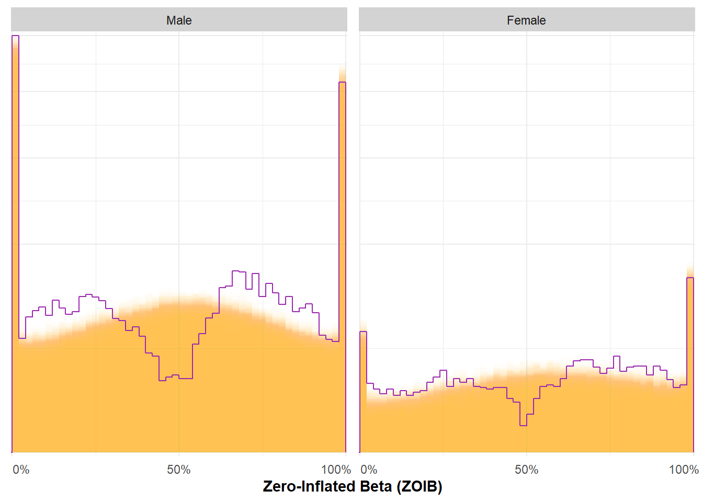
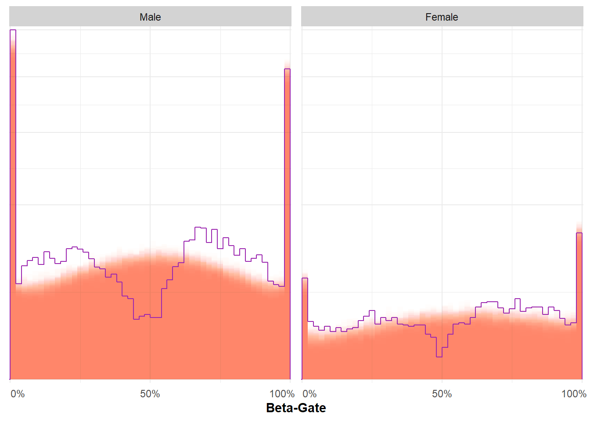
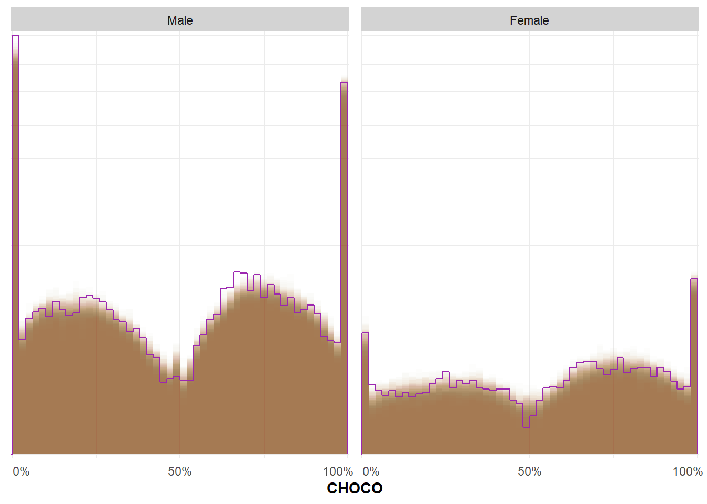
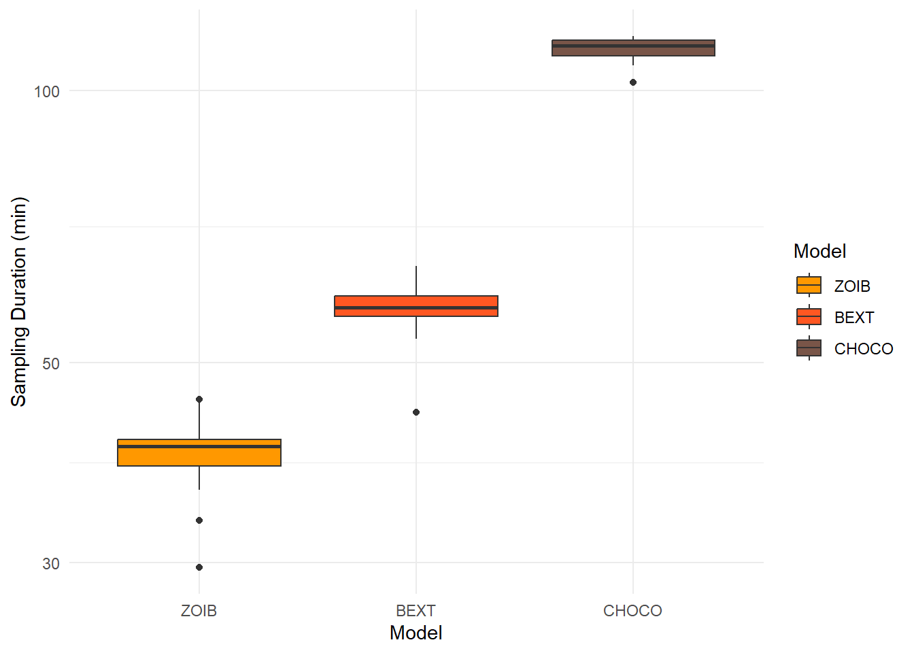
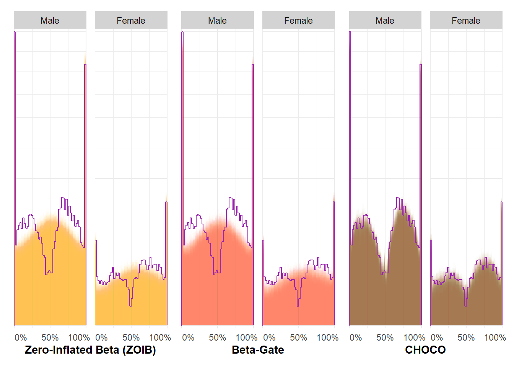
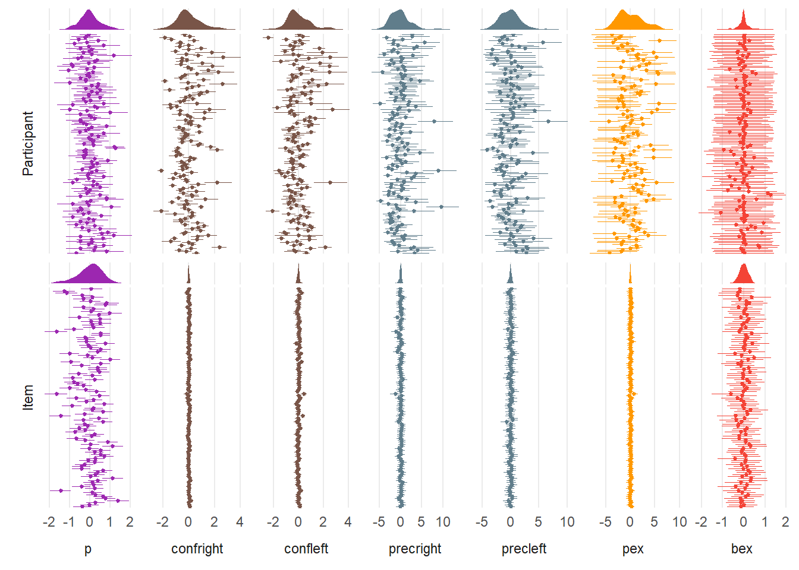
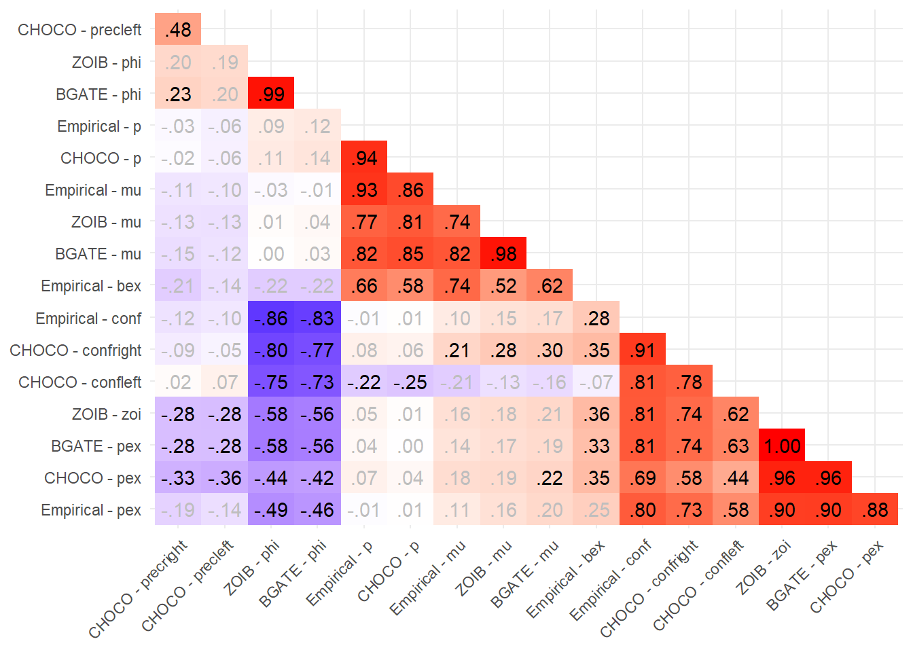

Code
options(mc.cores = parallel::detectCores() - 2)
library(tidyverse)
library(easystats)
library(patchwork)
library(ggside)
library(ggdist)
library(brms)
library(cmdstanr)
library(rstan)
set.seed(123)options(mc.cores = parallel::detectCores() - 2)
library(tidyverse)
library(easystats)
library(patchwork)
library(ggside)
library(ggdist)
library(brms)
library(cmdstanr)
library(rstan)
set.seed(123)dfraw <- read.csv("https://raw.githubusercontent.com/RealityBending/FakeFace/refs/heads/main/data/data.csv") |>
mutate(Real = (Belief_Answer + 1) / 2, # Rescale
Orientation = ifelse(Sexual_Orientation == "Straight ", "Heterosexual", Sexual_Orientation),
Item = gsub(".jpg", "", Stimulus)) |>
filter(Sex %in% c("Male", "Female"), Orientation %in% c("Heterosexual", "Bisexual", "Homosexual")) |>
mutate(Relevance = case_when(
Sex == "Male" & Orientation == "Heterosexual" & grepl("NF", Stimulus) ~ "Relevant",
Sex == "Female" & Orientation == "Heterosexual" & grepl("NM", Stimulus) ~ "Relevant",
Sex == "Male" & Orientation == "Bisexual" & grepl("NF", Stimulus) ~ "Relevant",
Sex == "Female" & Orientation == "Bisexual" & grepl("NM", Stimulus) ~ "Relevant",
Sex == "Male" & Orientation == "Homosexual" & grepl("NM", Stimulus) ~ "Relevant",
Sex == "Female" & Orientation == "Homosexual" & grepl("NF", Stimulus) ~ "Relevant",
.default = "Irrelevant"
)) |>
mutate(SexOrientation = paste(Sex, "-", Orientation)) |>
filter(Relevance == "Relevant", Orientation == "Heterosexual")
# Nudge mid-values to avoid model fitting issues
dfraw$Real[dfraw$Real == 0.5] <- sample(c(0.49, 0.51), sum(dfraw$Real == 0.5), replace = TRUE) # Avoid 0.5
dfraw |>
select(Participant, Sex, Item, Real, Attractive, Beauty) |>
write.csv("../data/sample1.csv", row.names = FALSE)# For demographic section
dfraw |>
mutate(n_stims = n(), .by = "Participant") |>
select(Participant, Age, Sex, n_stims) |>
slice(1, .by = "Participant") |>
report::report_participants()
report::report(dfraw$Sex)df <- read.csv("https://raw.githubusercontent.com/RealityBending/FictionChoco/refs/heads/main/data/sample1.csv")
df$Sex <- factor(df$Sex, levels = c("Male", "Female"))m1_zoib <- readRDS("models/sample1_zoib.rds")
params_table <- function(m) {
d <- as.data.frame(m, variable = insight::find_parameters(m, effects = "fixed", flatten = TRUE))
t <- bayestestR::describe_posterior(d, effects = "fixed", component = "all", ci_method = "hdi", test = "p_direction")
out <- insight::format_table(t)
out |>
mutate(col = t$pd) |>
gt::gt() |>
gt::data_color(columns = "col", method = "numeric", target_columns = "pd",
row = col > 0.95, palette = "yellow") |>
gt::data_color(columns = "col", method = "numeric", target_columns = "pd",
row = col > 0.97, palette = "green") |>
gt::cols_hide("col")
}
params_table(m1_zoib)| Parameter | Median | 95% CI | pd |
|---|---|---|---|
| b_Intercept | 0.05 | [-0.04, 0.13] | 85.00% |
| b_SexFemale | 0.16 | [ 0.01, 0.32] | 98.10% |
| b_coi_Intercept | -0.45 | [-0.92, -0.01] | 97.56% |
| b_coi_SexFemale | 1.56 | [ 0.67, 2.47] | 99.97% |
| b_phi_Intercept | 1.01 | [ 0.83, 1.19] | 100% |
| b_phi_SexFemale | 0.12 | [-0.14, 0.39] | 81.45% |
| b_zoi_Intercept | -2.58 | [-3.35, -1.82] | 100% |
| b_zoi_SexFemale | -1.23 | [-2.41, -0.09] | 98.45% |
summary(m1_zoib, robust = TRUE) Family: zero_one_inflated_beta
Links: mu = logit; phi = log; zoi = logit; coi = logit
Formula: Real ~ 0 + Intercept + Sex + (1 | Participant) + (1 | Item)
phi ~ 0 + Intercept + Sex + (1 | Participant) + (1 | Item)
zoi ~ 0 + Intercept + Sex + (1 | Participant) + (1 | Item)
coi ~ 0 + Intercept + Sex + (1 | Participant) + (1 | Item)
Data: df (Number of observations: 8253)
Draws: 96 chains, each with iter = 1500; warmup = 750; thin = 1;
total post-warmup draws = 72000
Multilevel Hyperparameters:
~Item (Number of levels: 109)
Estimate Est.Error l-95% CI u-95% CI Rhat Bulk_ESS Tail_ESS
sd(Intercept) 0.26 0.02 0.22 0.30 1.00 26650 45428
sd(phi_Intercept) 0.02 0.02 0.00 0.07 1.00 34752 37510
sd(zoi_Intercept) 0.32 0.06 0.21 0.43 1.00 32942 40956
sd(coi_Intercept) 1.06 0.11 0.86 1.30 1.00 30658 50843
~Participant (Number of levels: 147)
Estimate Est.Error l-95% CI u-95% CI Rhat Bulk_ESS Tail_ESS
sd(Intercept) 0.28 0.03 0.23 0.34 1.00 21447 37933
sd(phi_Intercept) 0.75 0.05 0.66 0.86 1.01 16691 31450
sd(zoi_Intercept) 3.14 0.27 2.67 3.74 1.00 16039 30947
sd(coi_Intercept) 1.22 0.16 0.95 1.58 1.00 25207 45009
Regression Coefficients:
Estimate Est.Error l-95% CI u-95% CI Rhat Bulk_ESS Tail_ESS
Intercept 0.05 0.05 -0.04 0.14 1.00 20059 34044
SexFemale 0.16 0.08 0.01 0.32 1.00 24412 37256
phi_Intercept 1.01 0.09 0.83 1.19 1.01 7084 14481
phi_SexFemale 0.12 0.13 -0.14 0.38 1.01 10568 22800
zoi_Intercept -2.58 0.39 -3.37 -1.84 1.02 4288 9964
zoi_SexFemale -1.23 0.59 -2.43 -0.11 1.01 6990 16875
coi_Intercept -0.45 0.23 -0.92 -0.00 1.00 19408 33637
coi_SexFemale 1.56 0.46 0.68 2.48 1.00 35598 48272
Draws were sampled using sample(hmc). For each parameter, Bulk_ESS
and Tail_ESS are effective sample size measures, and Rhat is the potential
scale reduction factor on split chains (at convergence, Rhat = 1).make_ppcheck <- function(m, fill = "#FF9800") {
pred <- m |>
modelbased::estimate_prediction(df, keep_iterations = 100, iterations = 100) |>
select(Sex, starts_with("iter_")) |>
bayestestR::reshape_iterations()
pred |>
ggplot(aes(x = iter_value)) +
stat_bin(aes(group = iter_group, y = after_stat(count / max(count))), position = "identity",
geom="bar", breaks = seq(0, 1.0, by = 0.02), pad = TRUE,
alpha = 0.01, fill = fill) +
stat_bin(data = df, aes(x = Real, y = after_stat(count / max(count))),
geom="step", breaks = seq(0, 1.0, by = 0.02),
linewidth = 0.5, color = "#9C27B0", position = position_nudge(x=-0.01), pad = TRUE) +
scale_y_sqrt(expand = c(0, 0.01)) +
scale_x_continuous(expand = c(0, 0), breaks = c(0, 0.5, 1), labels = c(" 0%", "50%", "100% ")) +
theme_minimal() +
theme(axis.title.x = element_text(face = "bold"),
axis.title.y = element_blank(),
axis.text.y = element_blank(),
strip.background = element_rect(fill = "lightgrey", color = NA)) +
facet_wrap(~Sex, scales = "free_y") +
coord_cartesian(xlim = c(-0.003, 1.005), ylim=c(0, 1), expand = TRUE)
}
p1_zoib <- make_ppcheck(m1_zoib, fill = "#FF9800") +
labs(x = "Zero-Inflated Beta (ZOIB)")
p1_zoib
m1_betagate <- readRDS("models/sample1_betagate.rds")
params_table(m1_betagate)| Parameter | Median | 95% CI | pd |
|---|---|---|---|
| b_Intercept | 0.05 | [-0.05, 0.14] | 84.03% |
| b_SexFemale | 0.17 | [ 0.01, 0.34] | 97.73% |
| b_phi_Intercept | 1.39 | [ 1.01, 1.78] | 100% |
| b_phi_SexFemale | 0.23 | [-0.34, 0.80] | 78.64% |
| b_pex_Intercept | -2.67 | [-3.42, -1.90] | 100% |
| b_pex_SexFemale | -1.30 | [-2.47, -0.18] | 98.87% |
| b_bex_Intercept | -0.55 | [-0.93, -0.16] | 99.80% |
| b_bex_SexFemale | 1.12 | [ 0.36, 1.89] | 99.83% |
summary(m1_betagate, robust = TRUE) Family: betagate
Links: mu = logit; phi = softplus; pex = logit; bex = logit
Formula: Real ~ 0 + Intercept + Sex + (1 | Participant) + (1 | Item)
phi ~ 0 + Intercept + Sex + (1 | Participant) + (1 | Item)
pex ~ 0 + Intercept + Sex + (1 | Participant) + (1 | Item)
bex ~ 0 + Intercept + Sex + (1 | Participant) + (1 | Item)
Data: df (Number of observations: 8253)
Draws: 96 chains, each with iter = 1500; warmup = 750; thin = 1;
total post-warmup draws = 72000
Multilevel Hyperparameters:
~Item (Number of levels: 109)
Estimate Est.Error l-95% CI u-95% CI Rhat Bulk_ESS Tail_ESS
sd(Intercept) 0.29 0.02 0.25 0.34 1.00 22987 40834
sd(phi_Intercept) 0.03 0.03 0.00 0.10 1.00 43049 35444
sd(pex_Intercept) 0.22 0.07 0.04 0.34 1.00 16964 14638
sd(bex_Intercept) 0.68 0.10 0.50 0.89 1.00 30991 46640
~Participant (Number of levels: 147)
Estimate Est.Error l-95% CI u-95% CI Rhat Bulk_ESS Tail_ESS
sd(Intercept) 0.30 0.03 0.25 0.36 1.00 20799 39001
sd(phi_Intercept) 1.62 0.12 1.40 1.89 1.00 15743 31219
sd(pex_Intercept) 3.11 0.27 2.64 3.72 1.01 14099 28057
sd(bex_Intercept) 1.02 0.15 0.77 1.35 1.00 29831 46596
Regression Coefficients:
Estimate Est.Error l-95% CI u-95% CI Rhat Bulk_ESS Tail_ESS
Intercept 0.05 0.05 -0.05 0.15 1.00 15759 28293
SexFemale 0.17 0.08 0.00 0.34 1.00 22324 35907
phi_Intercept 1.39 0.20 1.01 1.77 1.02 4518 12450
phi_SexFemale 0.23 0.29 -0.33 0.80 1.01 8232 18072
pex_Intercept -2.67 0.38 -3.45 -1.93 1.03 2908 10201
pex_SexFemale -1.30 0.58 -2.48 -0.18 1.02 4831 14201
bex_Intercept -0.55 0.19 -0.94 -0.17 1.00 28755 41895
bex_SexFemale 1.12 0.38 0.37 1.90 1.00 43819 52254
Draws were sampled using sample(hmc). For each parameter, Bulk_ESS
and Tail_ESS are effective sample size measures, and Rhat is the potential
scale reduction factor on split chains (at convergence, Rhat = 1).p1_betagate <- make_ppcheck(m1_betagate, fill = "#FF5722") +
labs(x = "Beta-Gate")
p1_betagate
# d <- brms::as_draws(m1_betagate, draw=1:10, variable = "^b_", regex = TRUE) |>
# bayestestR::describe_posterior(centrality = "median", test = "p_direction")m1_choco <- readRDS("models/sample1_choco.rds")
params_table(m1_choco)| Parameter | Median | 95% CI | pd |
|---|---|---|---|
| b_Intercept | 0.11 | [-0.08, 0.31] | 87.98% |
| b_SexFemale | 0.39 | [ 0.06, 0.74] | 98.91% |
| b_confright_Intercept | 0.35 | [ 0.12, 0.57] | 99.86% |
| b_confright_SexFemale | -0.14 | [-0.48, 0.19] | 80.25% |
| b_confleft_Intercept | 0.43 | [ 0.20, 0.67] | 100.00% |
| b_confleft_SexFemale | -0.43 | [-0.78, -0.08] | 99.25% |
| b_precright_Intercept | 4.32 | [ 3.63, 5.04] | 100% |
| b_precright_SexFemale | -0.72 | [-1.79, 0.30] | 91.26% |
| b_precleft_Intercept | 3.47 | [ 2.88, 4.06] | 100% |
| b_precleft_SexFemale | 0.06 | [-0.86, 1.02] | 54.77% |
| b_pex_Intercept | -1.96 | [-2.72, -1.23] | 100% |
| b_pex_SexFemale | -1.23 | [-2.41, -0.08] | 98.46% |
| b_bex_Intercept | -0.44 | [-0.73, -0.15] | 99.89% |
| b_bex_SexFemale | 0.62 | [ 0.01, 1.23] | 97.83% |
summary(m1_choco, robust = TRUE) Family: choco
Links: mu = logit; confright = logit; precright = softplus; confleft = logit; precleft = softplus; pex = logit; bex = logit; pmid = identity
Formula: Real ~ 0 + Intercept + Sex + (1 | Participant) + (1 | Item)
confright ~ 0 + Intercept + Sex + (1 | Participant) + (1 | Item)
confleft ~ 0 + Intercept + Sex + (1 | Participant) + (1 | Item)
precright ~ 0 + Intercept + Sex + (1 | Participant) + (1 | Item)
precleft ~ 0 + Intercept + Sex + (1 | Participant) + (1 | Item)
pex ~ 0 + Intercept + Sex + (1 | Participant) + (1 | Item)
bex ~ 0 + Intercept + Sex + (1 | Participant) + (1 | Item)
pmid = 0
Data: df (Number of observations: 8253)
Draws: 96 chains, each with iter = 1500; warmup = 750; thin = 1;
total post-warmup draws = 72000
Multilevel Hyperparameters:
~Item (Number of levels: 109)
Estimate Est.Error l-95% CI u-95% CI Rhat Bulk_ESS
sd(Intercept) 0.66 0.05 0.56 0.77 1.00 23843
sd(confright_Intercept) 0.09 0.02 0.05 0.13 1.00 23381
sd(confleft_Intercept) 0.14 0.02 0.10 0.18 1.00 32279
sd(precright_Intercept) 0.52 0.12 0.25 0.76 1.00 16252
sd(precleft_Intercept) 0.46 0.13 0.15 0.70 1.01 14305
sd(pex_Intercept) 0.32 0.10 0.08 0.50 1.00 17773
sd(bex_Intercept) 0.41 0.11 0.16 0.62 1.01 15685
Tail_ESS
sd(Intercept) 43146
sd(confright_Intercept) 32676
sd(confleft_Intercept) 48231
sd(precright_Intercept) 14250
sd(precleft_Intercept) 12829
sd(pex_Intercept) 15016
sd(bex_Intercept) 12286
~Participant (Number of levels: 147)
Estimate Est.Error l-95% CI u-95% CI Rhat Bulk_ESS
sd(Intercept) 0.58 0.05 0.49 0.68 1.00 26474
sd(confright_Intercept) 0.97 0.07 0.85 1.12 1.01 11052
sd(confleft_Intercept) 0.98 0.07 0.85 1.14 1.01 13528
sd(precright_Intercept) 2.75 0.27 2.28 3.33 1.00 17235
sd(precleft_Intercept) 2.23 0.22 1.84 2.71 1.00 20540
sd(pex_Intercept) 3.01 0.31 2.48 3.72 1.00 25555
sd(bex_Intercept) 0.69 0.12 0.49 0.95 1.00 36152
Tail_ESS
sd(Intercept) 43665
sd(confright_Intercept) 23142
sd(confleft_Intercept) 26247
sd(precright_Intercept) 34087
sd(precleft_Intercept) 38089
sd(pex_Intercept) 44098
sd(bex_Intercept) 51462
Regression Coefficients:
Estimate Est.Error l-95% CI u-95% CI Rhat Bulk_ESS Tail_ESS
Intercept 0.11 0.10 -0.08 0.31 1.00 19006 31851
SexFemale 0.39 0.17 0.06 0.74 1.00 26450 39620
confright_Intercept 0.35 0.11 0.12 0.58 1.03 2202 5722
confright_SexFemale -0.14 0.17 -0.48 0.19 1.02 5198 11351
precright_Intercept 4.32 0.36 3.65 5.06 1.01 13460 25865
precright_SexFemale -0.72 0.53 -1.76 0.33 1.00 15430 27198
confleft_Intercept 0.43 0.12 0.21 0.67 1.02 4549 11044
confleft_SexFemale -0.43 0.18 -0.78 -0.08 1.01 7656 15970
precleft_Intercept 3.47 0.30 2.89 4.08 1.00 15647 29913
precleft_SexFemale 0.06 0.47 -0.87 1.02 1.00 20241 34229
pex_Intercept -1.96 0.38 -2.71 -1.22 1.01 8000 15870
pex_SexFemale -1.23 0.59 -2.45 -0.12 1.01 12219 26969
bex_Intercept -0.44 0.14 -0.74 -0.16 1.00 46194 53266
bex_SexFemale 0.62 0.31 0.02 1.24 1.00 65421 56821
Further Distributional Parameters:
Estimate Est.Error l-95% CI u-95% CI Rhat Bulk_ESS Tail_ESS
pmid 0.00 0.00 0.00 0.00 NA NA NA
Draws were sampled using sample(hmc). For each parameter, Bulk_ESS
and Tail_ESS are effective sample size measures, and Rhat is the potential
scale reduction factor on split chains (at convergence, Rhat = 1).p1_choco <- make_ppcheck(m1_choco, fill = "#7B3F00") +
labs(x = "CHOCO")
p1_choco
visualize_dchoco <- function(m, newdata) {
p <- modelbased::estimate_prediction(m, data = newdata, predict = "mu", iterations = 200)
confright <- modelbased::estimate_prediction(m, data = newdata, predict = "confright", iterations = 200)
confleft <- modelbased::estimate_prediction(m, data = newdata, predict = "confleft", iterations = 200)
precright <- modelbased::estimate_prediction(m, data = newdata, predict = "precright", iterations = 200)
precleft <- modelbased::estimate_prediction(m, data = newdata, predict = "precleft", iterations = 200)
pex <- modelbased::estimate_prediction(m, data = newdata, predict = "pex", iterations = 200)
bex <- modelbased::estimate_prediction(m, data = newdata, predict = "bex", iterations = 200)
data <- data.frame()
x <- seq(0, 1, length.out = 1001)
for(i in 1:nrow(newdata)) {
data <- data.frame(
x = c(-0.005, x, 1.005),
y = c(0, cogmod::dchoco(x, p=p$Predicted[i], confright=confright$Predicted[i], confleft = confleft$Predicted[i],
precright = precright$Predicted[i], precleft = precleft$Predicted[i],
pex = pex$Predicted[i], bex = bex$Predicted[i], pmid = 0), 0)
) |>
merge(newdata[i, ]) |>
rbind(data)
}
data
}
pred <- visualize_dchoco(m1_choco, newdata=insight::get_datagrid(m1_choco))
p1_density <- pred |>
mutate(y = ifelse(x %in% c(0, 1), y * 3, y)) |> # Inflate extremes for visibility
ggplot(aes(x=x, y=y, color=Sex)) +
geom_line(linewidth = 1.5) +
scale_color_manual(values = c("Male"="#2196F3", "Female"="#E91E63")) +
scale_x_continuous(breaks = c(0, 0.25, 0.5, 0.75, 1),
labels = c("0%\nAI-Generated", "25%", "50%", "75%", "100%\nPhotograph")) +
theme_minimal() +
labs(y = "Distribution", x = "Do you think this image is real?") +
theme(axis.text.y = element_blank(),
axis.title.x = element_text(face = "bold"))
p1_density
rbind(
mutate(attributes(m1_zoib$fit)$metadata$time$chain, Model="ZOIB"),
mutate(attributes(m1_betagate$fit)$metadata$time$chain, Model="BEXT"),
mutate(attributes(m1_choco$fit)$metadata$time$chain, Model="CHOCO")
) |>
mutate(Model = fct_relevel(Model, "ZOIB", "BEXT", "CHOCO"),
total = total / 60) |>
ggplot(aes(x = Model, y = total, fill = Model)) +
geom_boxplot() +
labs(y = "Sampling Duration (min)") +
scale_y_log10() +
scale_fill_manual(values = c("#FF9800", "#FF5722", "#795548")) +
theme_minimal() 
loocomp <- loo::loo_compare(m1_zoib, m1_betagate, m1_choco, criterion = "waic")
parameters(loocomp, include_ENP = TRUE)# Fixed Effects
Name | WAIC | ENP | ELPD | Difference | Difference_SE | p
-------------------------------------------------------------------------------
m1_choco | 276.89 | 887.42 | -138.45 | 0.00 | 0.00 |
m1_betagate | 4027.52 | 476.73 | -2013.76 | -1875.31 | 61.18 | < .001
m1_zoib | 4109.12 | 519.55 | -2054.56 | -1916.11 | 61.75 | < .001report::report(loocomp)The difference in predictive accuracy, as indexed by Expected Log Predictive
Density (ELPD-WAIC), suggests that 'm1_choco' is the best model (ELPD =
-138.45), followed by 'm1_betagate' (diff-ELPD = -1875.31 +- 61.18, p < .001)
and 'm1_zoib' (diff-ELPD = -1916.11 +- 61.75, p < .001)p1_zoib | p1_betagate | p1_choco
table_dvour <- function(g) {
performance::performance_dvour(g) |>
arrange(desc(D_vour)) |>
gt::gt() |>
gt::data_color("D_vour", palette = c("red", "red", "orange", "yellow", "green"), domain = c(0, 1)) |>
gt::fmt_auto()
}
g1_zoib <- modelbased::estimate_grouplevel(m1_zoib)
table_dvour(g1_zoib)| Component | Group | Parameter | D_vour |
|---|---|---|---|
| phi | Participant | Intercept | 0.881 |
| zoi | Participant | Intercept | 0.845 |
| conditional | Item | Intercept | 0.819 |
| coi | Item | Intercept | 0.713 |
| conditional | Participant | Intercept | 0.687 |
| zoi | Item | Intercept | 0.372 |
| coi | Participant | Intercept | 0.367 |
| phi | Item | Intercept | 0.007 |
g1_betagate <- modelbased::estimate_grouplevel(m1_betagate)
table_dvour(g1_betagate)| Component | Group | Parameter | D_vour |
|---|---|---|---|
| phi | Participant | Intercept | 0.878437672 |
| conditional | Item | Intercept | 0.852778285 |
| pex | Participant | Intercept | 0.841685595 |
| conditional | Participant | Intercept | 0.721601219 |
| bex | Item | Intercept | 0.516332023 |
| bex | Participant | Intercept | 0.312822978 |
| pex | Item | Intercept | 0.194730160 |
| phi | Item | Intercept | 0.002610483 |
g1_choco <- modelbased::estimate_grouplevel(m1_choco)
table_dvour(g1_choco)| Component | Group | Parameter | D_vour |
|---|---|---|---|
| confright | Participant | Intercept | 0.9357483 |
| confleft | Participant | Intercept | 0.9114374 |
| conditional | Item | Intercept | 0.8589728 |
| precright | Participant | Intercept | 0.7925920 |
| pex | Participant | Intercept | 0.7892902 |
| conditional | Participant | Intercept | 0.7269050 |
| precleft | Participant | Intercept | 0.6956264 |
| confleft | Item | Intercept | 0.4710295 |
| confright | Item | Intercept | 0.3498829 |
| precright | Item | Intercept | 0.3153408 |
| bex | Item | Intercept | 0.2675590 |
| precleft | Item | Intercept | 0.2450820 |
| bex | Participant | Intercept | 0.2239225 |
| pex | Item | Intercept | 0.2043826 |
colors <- c("p" = "#9C27B0", "confright" = "#795548", "confleft" = "#795548",
"precright" = "#607D8B","precleft" = "#607D8B", "pex" = "#FF9800", "bex" = "#F44336")
p2_dvour <- g1_choco |>
mutate(Component = ifelse(Component == "conditional", "p", Component),
Component = fct_relevel(Component, "p", "confright", "confleft", "precright", "precleft", "pex", "bex"),
Group = fct_relevel(Group, "Participant", "Item"),
.group = paste0(Group, " (", Component, ")")) |>
ggplot(aes(x = Median, y = Level)) +
geom_pointrange(aes(xmin = CI_low, xmax = CI_high, color= Component), linewidth = 0.3, size = 0.05) +
facet_grid(Group~Component, scales = "free", switch="both") +
ggside::geom_xsidedensity(aes(group = .group, fill = Component), color = NA) +
ggside::ggside(scales = "free") +
scale_color_manual(values = colors) +
scale_fill_manual(values = colors) +
theme_minimal() +
theme(axis.text.y = element_blank(),
axis.ticks.y = element_blank(),
strip.placement.x = "outside",
strip.background = element_rect(fill = NA, color = NA),
axis.title.x = element_blank(),
axis.title.y = element_blank(),
panel.grid.minor = element_blank(),
panel.grid.major.y = element_blank(),
legend.position = "none")
p2_dvour
features1 <- df |>
summarize(Sample = "Sample1",
Empirical_p = sum(Real > 0.5) / n(),
Empirical_conf = mean(abs(Real - 0.5) * 2),
Empirical_pex = sum(Real %in% c(0, 1)) / n(),
Empirical_bex = sum(Real == 1) / sum(Real %in% c(0, 1)),
Empirical_mu = mean(Real),
.by = "Participant")
features1 <- reshape_grouplevel(g1_zoib, indices = "Median", group = "Participant") |>
datawizard::data_rename("Intercept", "mu") |>
select(-coi_Intercept) |>
datawizard::data_addprefix("ZOIB_", exclude = "Participant") |>
full_join(features1, by = "Participant")
features1 <- reshape_grouplevel(g1_betagate, indices = "Median", group = "Participant") |>
datawizard::data_rename("Intercept", "mu") |>
select(-bex_Intercept) |>
datawizard::data_addprefix("BGATE_", exclude = "Participant") |>
full_join(features1, by = "Participant")
features1 <- reshape_grouplevel(g1_choco, indices = "Median", group = "Participant") |>
datawizard::data_rename("Intercept", "p") |>
select(-bex_Intercept) |>
datawizard::data_addprefix("CHOCO_", exclude = "Participant") |>
full_join(features1, by = "Participant")cordata <- correlation::correlation(select(features1, -Participant, -Sample), p_adjust = "none", redundant = TRUE) |>
correlation::cor_sort() |>
correlation::cor_lower() |>
as.data.frame() |>
mutate(Parameter2 = fct_rev(Parameter2),
Parameter1 = fct_relabel(Parameter1, \(x) gsub("_Intercept", "", x)),
Parameter2 = fct_relabel(Parameter2, \(x) gsub("_Intercept", "", x)),
Parameter1 = fct_relabel(Parameter1, \(x) gsub("_", " - ", x)),
Parameter2 = fct_relabel(Parameter2, \(x) gsub("_", " - ", x)))
p2_cor <- cordata |>
ggplot(aes(x=Parameter2, y = Parameter1)) +
geom_tile(aes(fill = r)) +
geom_text(aes(label = insight::format_value(r, 2, zap_small = TRUE, lead_zero = FALSE)), color = ifelse(cordata$p < 0.01, "black", "grey")) +
scale_fill_gradient2(low = "blue", mid = "white", high = "red", midpoint = 0) +
theme_minimal() +
theme(
axis.text.x = element_text(angle = 45, hjust = 1),
axis.title.x = element_blank(),
axis.title.y = element_blank(),
legend.position = "none"
)
p2_cor
Choco parameters are the most interpretable (relate to empirical indices).
p1_a <- wrap_elements((p1_zoib | p1_betagate | p1_choco) +
patchwork::plot_annotation(title = "Posterior Predictive Checks", theme = theme(plot.title = element_text(face = "bold"))))
p1_b <- wrap_elements(p1_density +
patchwork::plot_annotation(title = "Effect of Sex", theme = theme(plot.title = element_text(face = "bold"))))
p1 <- p1_a / p1_b
p2_a <- wrap_elements(p2_dvour +
patchwork::plot_annotation(title = "Reliability of CHOCO Participant-Level Estimates", theme = theme(plot.title = element_text(face = "bold"))))
p2_b <- wrap_elements(p2_cor +
patchwork::plot_annotation(title = "Correlation of Participant-Level Estimates", theme = theme(plot.title = element_text(face = "bold"))))
p2 <- p2_a / p2_b + plot_layout(heights = c(1.5, 1))
ggsave("../paper/figures/fig3.png", p1, width = 8, height = 8, dpi = 300)
ggsave("../paper/figures/fig4.png", p2, width = 8, height = 12, dpi = 300)